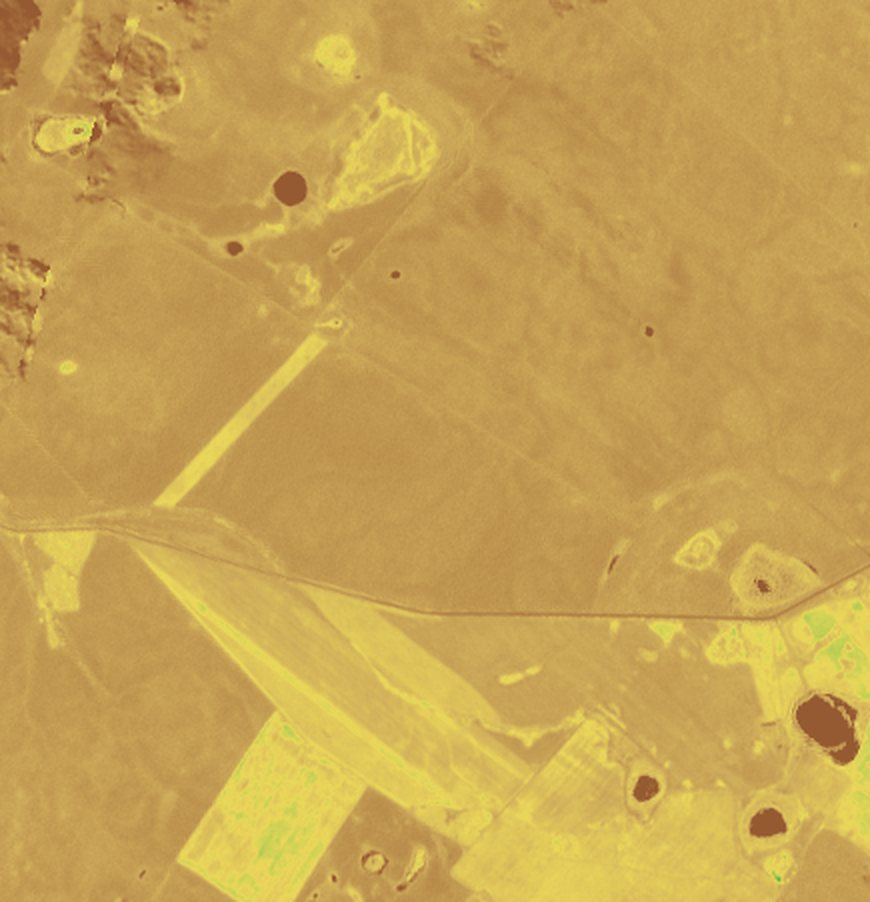
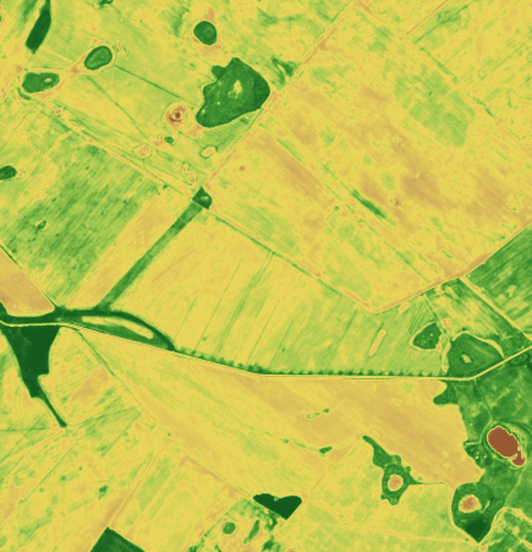
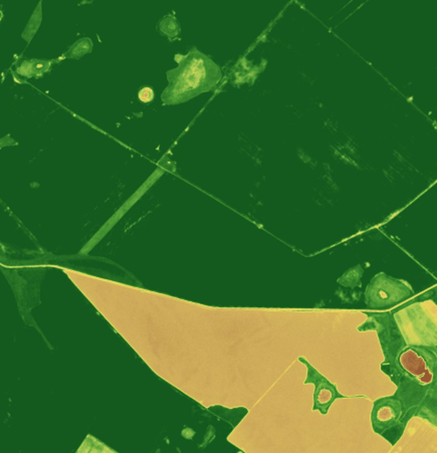
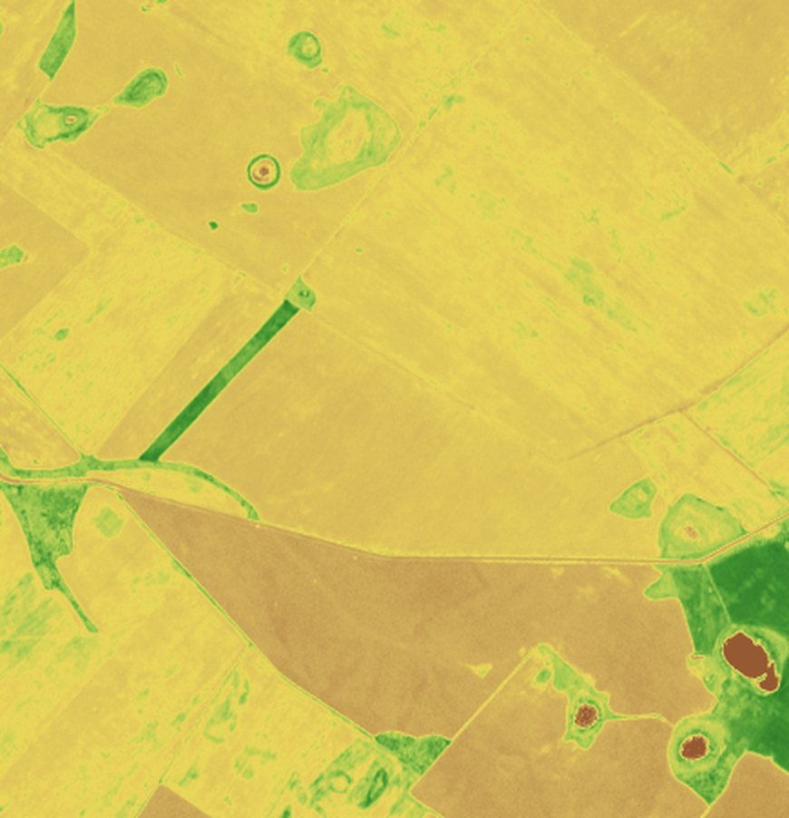
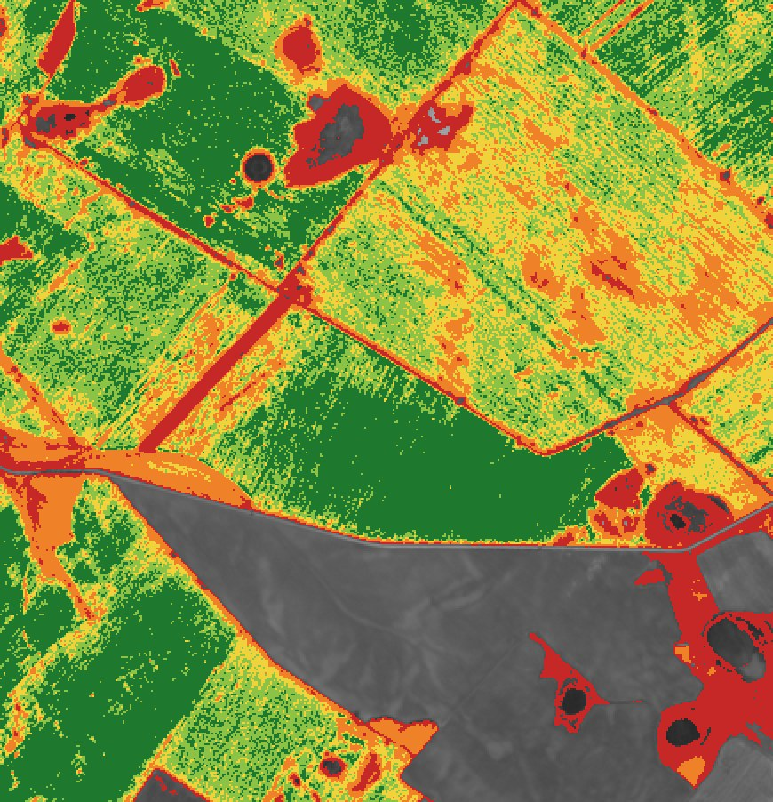

Что вы получите
Четыре инструмента в одной карте
По смыслу — то же, что Cropio, только под ваши поля, с дроном и без лишнего.
Спутник по всем полям
Цветная карта силы посевов, график каждого поля за сезон, слабые зоны. Обновляется само.
Облёты дроном
Карта поля до сантиметров: очаги сорняков с площадями, пропуски, полегание.
Журнал поля
Что посеяли, чем и когда обработали, какой сорт. История каждого поля за все годы.
Отметки с телефона
Точка, фото и тип проблемы — прямо с комбайна: «здесь очаг осота». Уведомления, если поле «просело».
На настоящих снимках
Сезон поля — как на ладони
Снимки Sentinel-2 этого сезона, соевые поля Амурской области. Мы скачали их бесплатно и обработали — так же будет по вашим полям.





Где поле недодаёт — видно сразу
Красные и оранжевые зоны — посевы слабее, чем на остальной площади. Это повод заехать или поднять дрон.
- все снимки сезона по каждому полю, листаете ползунком
- график поля: всходы, максимум, созревание
- облачные снимки отбрасываются сами
- сообщение в Telegram, если поле резко «просело»
Дрон
Что увидим с дрона, чего не видит спутник
Спутник показывает, где проблема; дрон — что именно там происходит. Дрон летит сам по контуру поля, снимки склеиваются в карту с координатами.
Как будем работать
От ваших полей до карты в телефоне
Вы присылаете поля
Обведённые на карте или точками, кадастровые номера, что где растёт. Как это сделать →
Мы заводим поля
Уточняем контуры по снимкам и подтягиваем все спутниковые снимки сезона 2026.
Ссылка на ваши поля
Карта, ленты по датам, графики и зоны — примерно через 1–2 недели. Дальше обновляется само.
Облёты и журнал
Облёты дроном по заданию, журнал работ и отметки с телефона — следующим шагом.
Сколько стоит
Данные бесплатные — платим только за работу
Sentinel-2 — открытые данные, без регистрации и ключей.
Небольшой российский сервер, когда добавим журнал и отметки.
Когда нужно: 2–3 раза за сезон хватает для начала.
Каждый год, без дрона и не под ваши задачи.
Материалы
Подробнее
Как прислать поля: обвести на карте, точки с телефона, кадастровые номера, шаблон таблицы.
Открыть задание →Спутник по API, частота и цены, путь облёта дроном, нейросеть, хранение — на настоящих снимках.
Открыть →Какие программы есть для небольших соевых хозяйств, что им нужно, бесплатные данные и API.
Открыть →Первый шаг — за Амиром
Пришлите поля любым удобным способом — и через 1–2 недели вы увидите свои поля по датам за весь сезон.
Что нужно от Амира →